.png)
 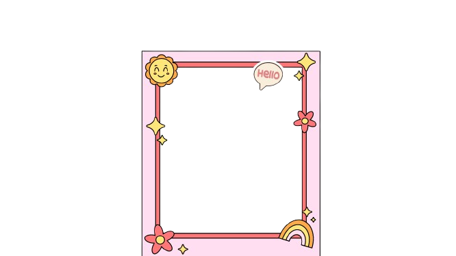
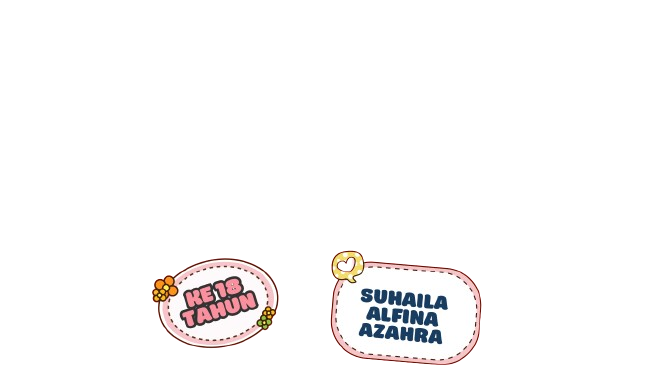
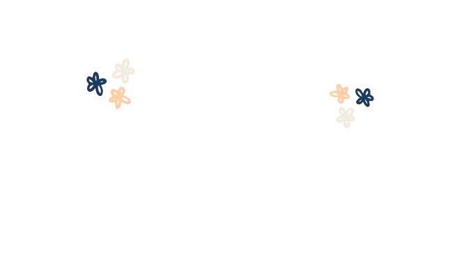
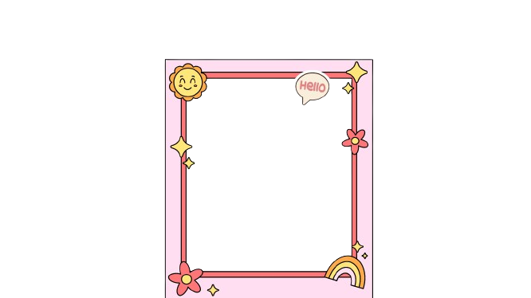
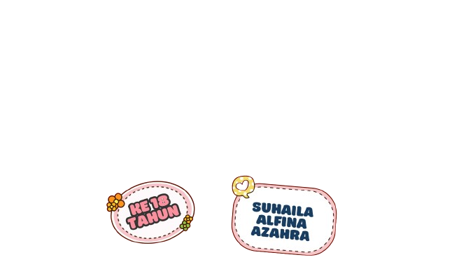
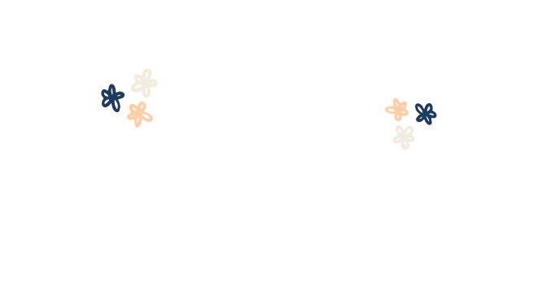
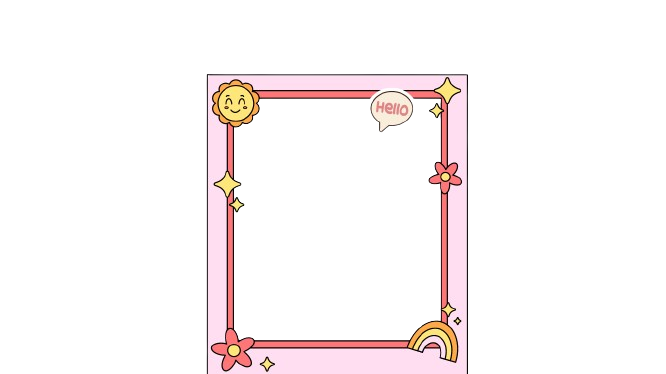
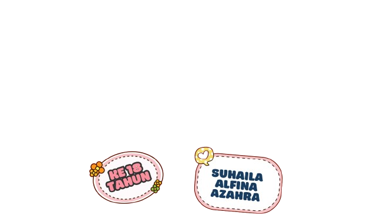
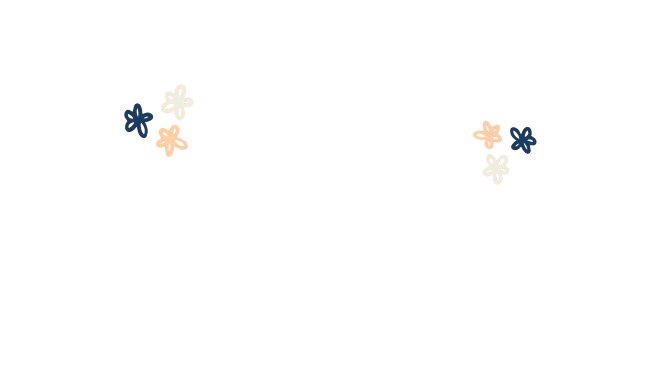
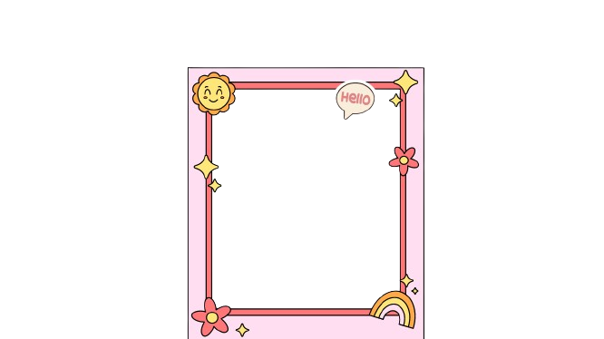
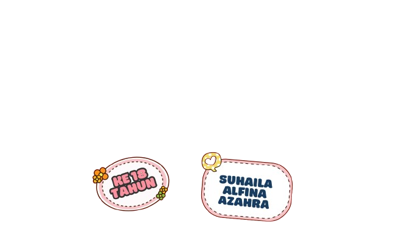
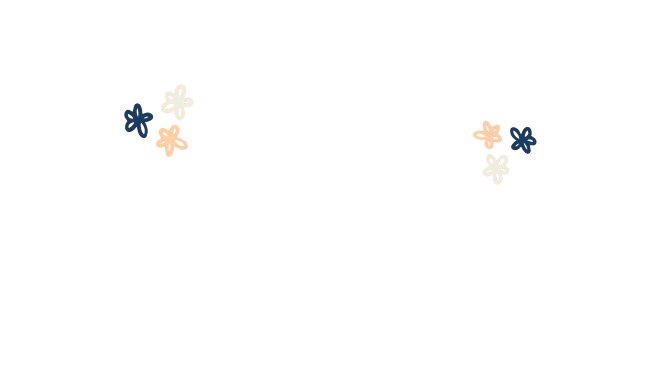
Hai Suha, selamat ulang tahun yang ke-18 ya! Gak kerasa banget udah nambah umur lagi aja.
Semoga di usia yang baru ini, semua mimpi dan harapan kamu bisa tercapai.
Kamu adalah sahabat terbaik yang selalu bisa bikin hari-hari jadi lebih ceria dan berwarna.
Tetaplah jadi Suha yang penuh semangat dan ceria, ya!
gua juga mau ngucapin terima kasih yang sebesar-besarnya buat lu wahai suha. lu selalu ada di saat-saat sulit dan gak pernah bosen buat jadi support system gua.
Terima kasih udah jadi tempat curhat, penyemangat, dan temen yang selalu bisa diandalkan.
Gak semua orang bisa dapet sahabat kayak lu suha, dan gua bersyukur banget bisa kenal sama lu.
Dan buat perjalanan lu ke depan, gua yakin lu2 pasti bisa menghadaoi hari2 buat perjuangan utbk nanti & perjuangan yang lainya,
gua tunggu kabar baik lu tahun depan sama si UI ituu, tetap semangattt okee, perjalanann kita masih panjang buat kedepannya,
lu punya potensi yang luar biasa, jadi jangan pernah ragu sama diri sendiri. Tetap semangat belajar dan terus berjuang! Aku selalu dukung kamu, Suha! Let's make our dreams come true!